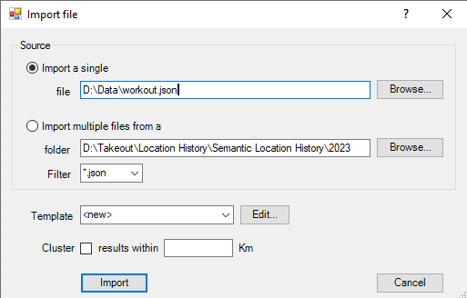

The Import File dialog is used to import structured data, either in JSON or XML formats.
Select either "Import a single" filename or select "Import multiple files" and choose a folder - all files the folder and subfolders that match the filter will be imported. The data format (JSON or XML) is determined automatically.
The Template defines how the data will be transformed. Select a template and click Import to load the file. Read about managing templates.
Clustering
GPS tracks often have a huge number of points. Points can be aggregated (collapsed) into single points which are within a given radius. For example, when the tracks represent driving to different cities, the desired result could be a single point for each city visited.
To do this, select Cluster Results and supply a distance in kilometres that is a little larger than the radius of a city, maybe 10Km. All the points will be extracted and then grouped by clusters of the chosen radius; each group will be output as a single point, either:
- If there is a field 'Duration' with datatype 'TimeSpan', the point will be the one with the longest duration
- Otherwise, the one that is closest to the centre of the group
Formats
Note: Whilst the primary use is for files containing geographical data, all derived filetypes can also be imported:
JSON formats:
XML formats:
etc.